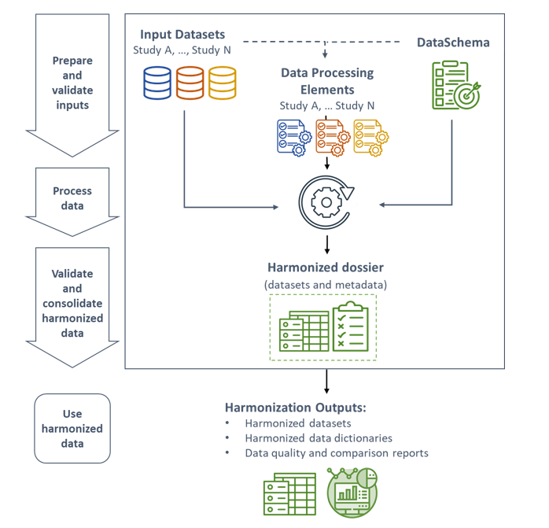

Overview
Harmonizing data (processing data items from different datasets under a common format) is essential to support research but can be methodologically and technically challenging. Rmonize is an R package developed by Maelstrom Research to address some of the key challenges faced and promote a streamlined, reusable, and well documented harmonization pipeline. The current documentation provides a starting point to use the package.
Pipeline

Data processing in Rmonize depends on three external user-provided elements: the input datasets (datasets collected by individual studies or data collection centres), DataSchema (list of core variables to generate across input datasets), and Data Processing Elements (elements and algorithms needed to process variables from input datasets into DataSchema formats). The DataSchema and Data Processing Elements are prepared in Excel spreadsheets and imported into R, and they can be easily modified and shared outside of R.
The package includes integrated functions to support organized data processing and generate well documented outputs. These functions help to prepare and validate inputs, process input datasets into harmonized datasets, identify and troubleshoot errors in processing elements, and produce documentation to help users evaluate harmonized data content and quality. The main outputs provided by Rmonize are the harmonized datasets, their associated data dictionaries, and reports with descriptive statistics, provided in summary tables or figures.
Rmonize also uses two underlying packages, madshapR and fabR, which include many functions to work with data and metadata. The specific functions required by Rmonize are automatically loaded and accessible to the user without separately loading madshapR and fabR.
Installation
# To install Rmonize:
install.packages('Rmonize')
library(Rmonize)
# If you need help with the package, please use:
Rmonize_website()
# Downloadable templates are available here
Rmonize_templates()
# Example files are available here, along with an online illustrative process
Rmonize_examples